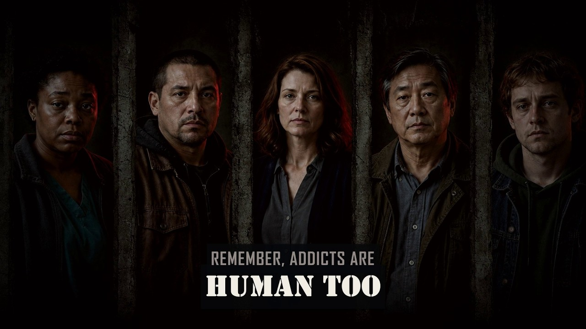
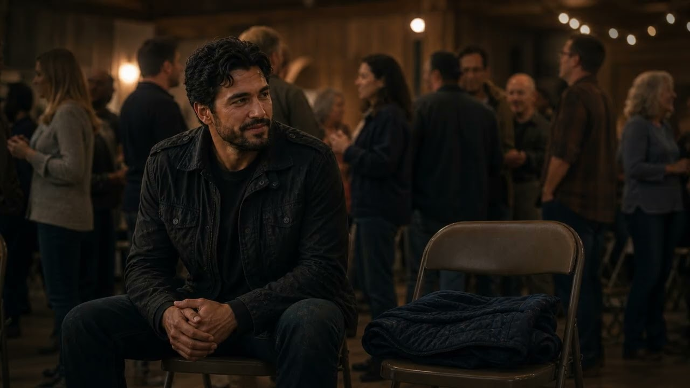
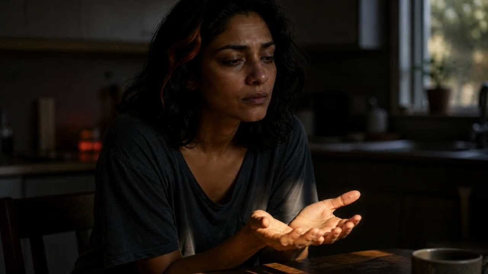
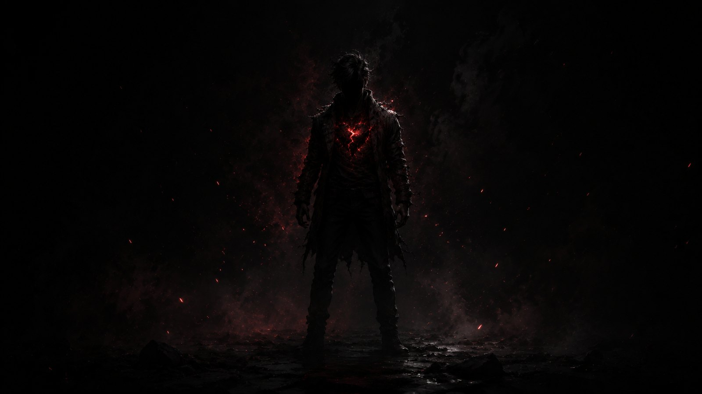

GhostHeart · The new release
I Won’t Pretend
to Speak for You.
Two promises. Fifty years. One question about what love can do.
A song for the love that stayed—and the judgment it outlived.

The album collection · 01—09
Every scar.
Every promise.
Every part of us.
From the battles we survive to the people we love. Find the songs that meet you where you are.
Find your albumBroken Man
The strength hidden inside people the world has written off.

GhostHeart
The name, the scars, and the heart behind GhostHeart.
FatherHood
What we inherit, what we refuse to pass down, and the love we choose to give.

GhostHearts Angel
I got you for life.

Human After All
No label tells the whole story.

Love is Love
Love doesn’t ask permission to exist. Love is love.
The Ones We Carry
They were here. They were loved. They still matter.

UpLifting
Your worst day does not get to write your ending.

You're Not God
You can have your beliefs. You do not get to play God.

Beyond the songs
Before the fire
had a name.
There is a life behind GhostHeart. Read it from the beginning, then follow the music, images, and words that carry it forward.
Read Life Before GhostHeartA question that stays
“Did we spend our lives judging love... while You were looking at what love could do?”I Won’t Pretend to Speak for You — GhostHeart
There is more here
Stay a little longer.
Keep a little light close
Join the Signal.
New music. New chapters. A little more GhostHeart in your corner.